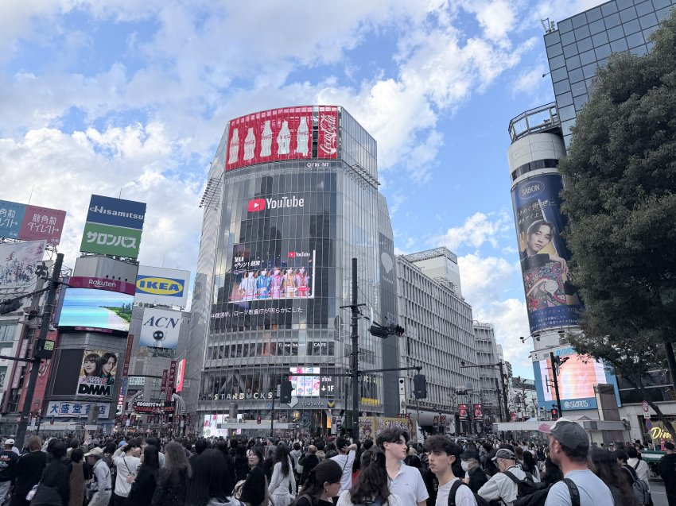
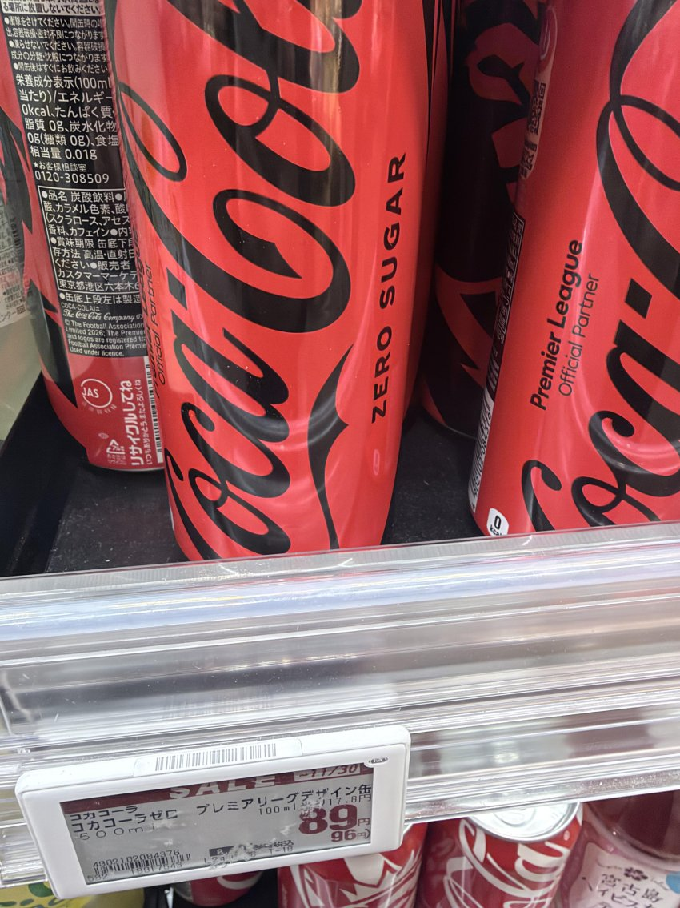
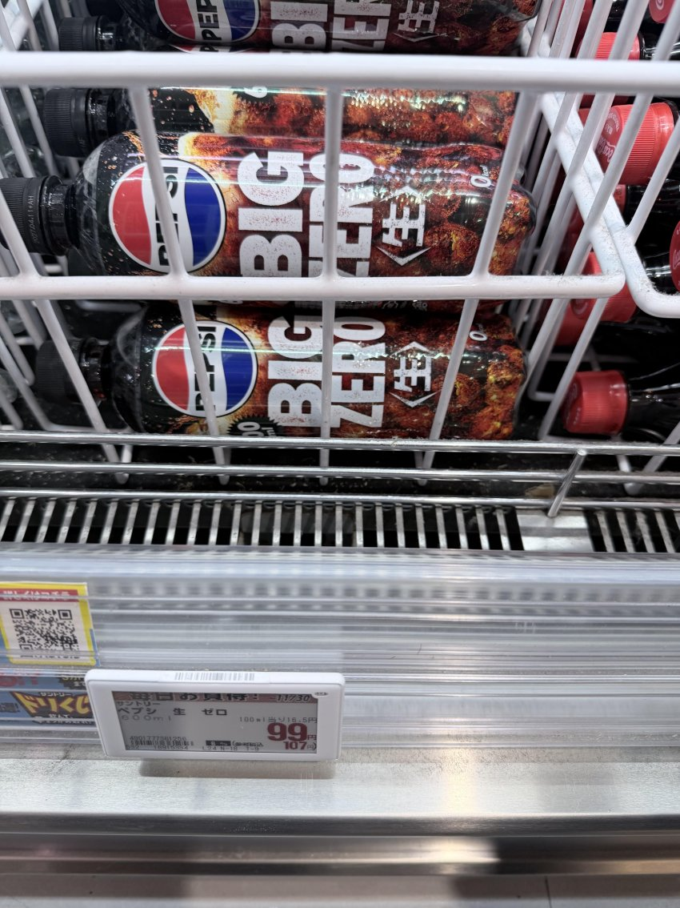
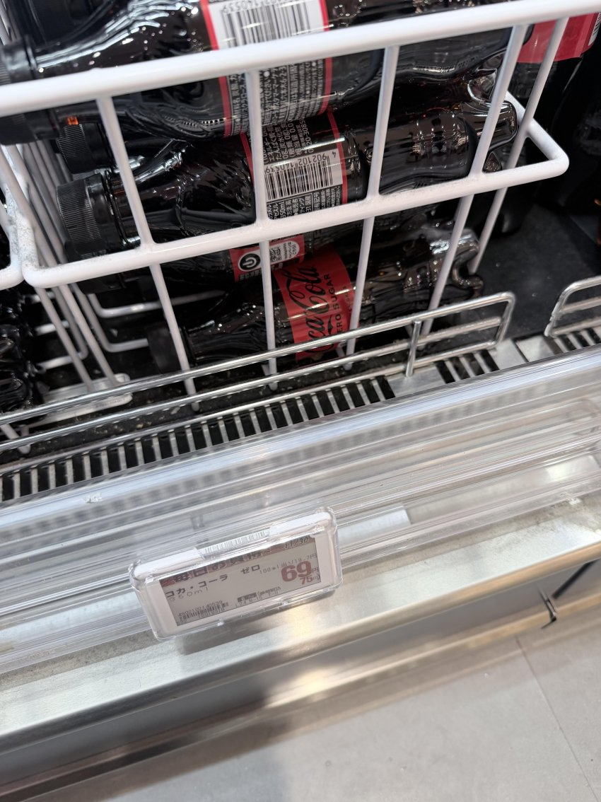
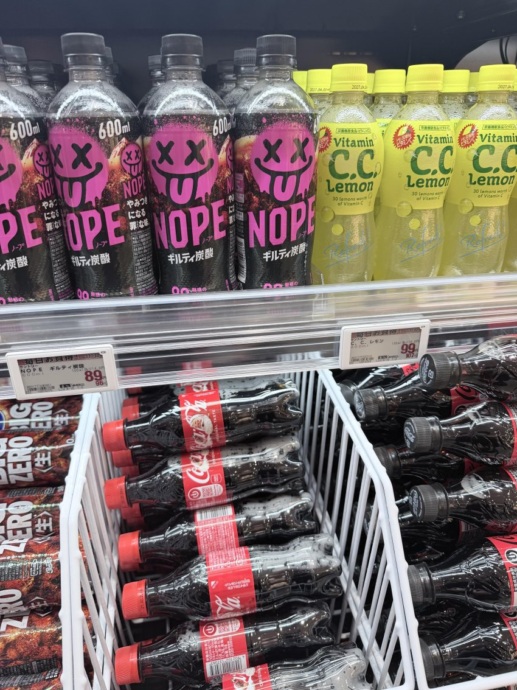
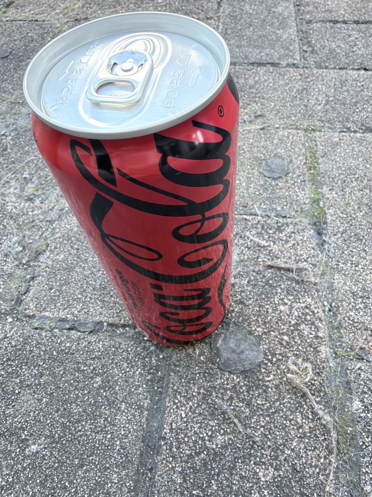

일본여행왔는데 도쿄한복판 콜라가격 뭐임???

코카콜라 제로 대형캔 500ml
800원

펩시 제로 600ml
900원

제로콜라 350ml
650원


이게 800원임
그리고 일본콜라는 왜일까 페트병딸때 느낌이 다름
‘팟!!!!!!!’하면서 터지는 소리남

일본여행왔는데 도쿄한복판 콜라가격 뭐임???

코카콜라 제로 대형캔 500ml
800원

펩시 제로 600ml
900원

제로콜라 350ml
650원


이게 800원임
그리고 일본콜라는 왜일까 페트병딸때 느낌이 다름
‘팟!!!!!!!’하면서 터지는 소리남


4050
찢센징 망상
40대
노괴
찢포티

역시
갓본

갓본콜라
차원이달라

그정도
맞음!!
대


갓본
여행


너, 잘 모르는구나?


황본